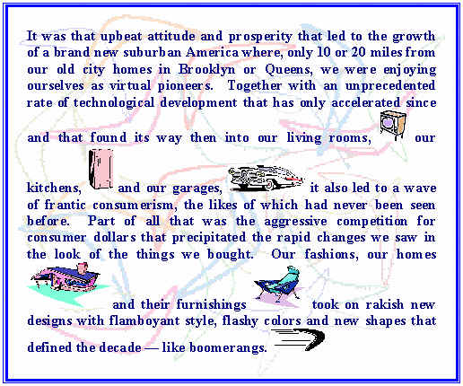
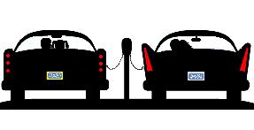
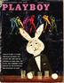

|
|
| |
|
|
|
|
|
|
|
Simple
─
that's the word most often
used to describe the 1950s ─
when we were all kids
in Oceanside, New York. Everyone knows when we were in school together, things were
not so complicated as they are today.
It was not all rosy, then, of course. There were things
about those times that we remember
|
|
sadly,
such as the Cold War, the threat of Communism
looming over us and the related shameful and
paranoid hysteria in America that was
McCarthyism, the beginnings of a violent civil
rights movement in the South, and a growing
problem with juvenile delinquency in our cities.
But
they are not just distant
memories ─ like the sweet things are.
Even more
sadly, most of these things are still with us today,
more or less, or replaced by similar atrocities
we can readily observe. We need those sweet,
nostalgic memories of what we no longer have to
help us cope with the many dark realities of
modern life. We are lucky enough to be among the
very few left who actually lived during the
middle of the last century and who have these
precious memories to hold onto and to share with
the many others who don't.
And despite
all those things we remember sadly, the times
were, in general, marked with a sense of
optimism, prosperity and overall well-being for
most of us ─
and simplicity.
According to Pulitzer Prize winning journalist and acclaimed historian, David
Halberstam (widely believed to be America's leading authority on the 1950s),
"In
that era of general good will and expanding affluence, few Americans doubted the
essential goodness of their society.¼ They
were optimistic about the future." |
|
|
|
 |
|
|
Although flamboyant
and flashy, the styles then were simple but by no
means ordinary.
|
And in no way and at no time was the
emphasis on style more apparent
than when our roads were ruled
by those cool, chrome-plated
dinosaurs ─
huge
cars
that
were virtual
works of art
— and that
got
lower,
longer,
wider,
faster
─
and
(of course)
cooler
each year!
|
|
The cars came
in
cool colors like turquoise and pink
with a host of new "power" features,
decked with
enormous fins
─ and, of course, the chrome
─
lots and lots
of chrome! |
|
|
|
|
|
"Those
were the days, my friend
We thought they'd never end
We'd sing and dance forever and a day
We'd live the life we choose
We'd fight and never lose
For we were young and sure to have our way."
|
|
From our point of
view, those certainly were the days, my friend
─ the
best days ever to be in high school in America. (And we
thought they'd never end.) No other time has been so
closely identified with ─ and fondly remembered for
─
its teenage experience and culture.
(In fact, linguistic research has demonstrated that even the word,
"teenager," was virtually unheard of prior to the 1950s.)
During that time, we were asserting a
new independence and engaging in our own revolution
─ the
teenage revolution ─
from which the
world has never recovered.
For the first time in history, we, the
teenagers, had some
money to spend ─
we
had our own
hairstyles,
fashions, movies and TV shows, and our own cars
(we were
so).
|
And
most significant of all, as teenagers, for the first
time, we had
our very own
music,
and like the times that produced it, it was much simpler
music than our kids have today
─
and
much, much more fun! This brand, spanking new
and vibrant music of ours
─
rock 'n' roll music
─
was a powerful force
that literally
changed the world.
It could not have been
anticipated
─
and it
certainly
could not be
stopped
(although many tried). |
One of our classmates, Mike
Blumenthal, wrote, "I
seem to remember that ours was the first
generation to have and hold dear pocket
transistor radios -
heralding the age of personal electronics. We
tripped over the sill of the doorway between the
industrial revolution and the service economy
while retaining close family and other social
values." |
|
Noted music historian, the late Arnold
Shaw (who was a friend of your webmaster's), wrote in his wonderful
book, The
Rockin' '50s:
|
"[H]istorians
¼
are given to such words as fun, joy and innocence in
recalling the songs¼ simpler than they
became in the '60s and¼ made for
dancing. But the new generation was seeking to define itself through them ¼ an embattled generation, for the Establishment fought the new music with bans,
arrests, lawsuits, not to mention actual physical destruction."
|
|
|
There was a
whole
lotta shakin' goin' on
as we
"defined" ourselves dancing, dancing
and dancing to our
sensual and exciting
new music ─
our young bodies exploding with hot,
hormonal fireworks
─
like
bombs bursting red glare. |
|
 |
|
|
|
|
At places like
the Sunrise Drive-In (we called it the "passion pit" )
, we explored and
experimented with
those new feelings, "sending" each other as we fumbled our way through
a series of teenage
crushes and awkward romances
─
all the while protesting
and struggling to
prove to our perplexed parents that we were already grown up
enough. |
|
|
|
|
|
|
|
|
|
And we
were |
|
, eating
15¢
hamburgers
and reading

|
|
|
|
(or PLAYBOY |
) magazine.
|
|
|
Yes, like one of our most major heroes,
James Dean,
we
teenagers were all rebels without a
cause
─
but all we really wanted to do was have
fun. |
|
|
|
|
 |
Click on any of the following links for a trip down
Memory Lane, U.S.A. Just a few of the best ones have been selected, but
each has links to virtually hundreds of others.
And when you are done
surfing, be sure to come back to our class site for more
stuff.
|
|
|
|
|
|
Click here
for a
|

|
|
|
collage of familiar |
|
images from the |
|
|
Copyright
© 2000-2021 by Howard B. Levy and
1960 Sailors
Association
Inc. All rights reserved.

|